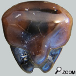
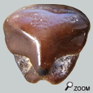

|
  |
||
 |
|
||
Des petites perles ... Les raies, au même titre que les requins, sont des poissons cartilagineux et donc la fossilisation du squelette est limitée à quelques composants résistants de squelette. L'appareil dentaire de cette famille de raies (et des suivantes) est constitué d'une multitude de dents juxtaposées constituant une sorte de mosaïque. Ces dents se régénèrent souvent. La forme des dents varie selon les espèces et les genres mais aussi chez un même individu avec sa position sur le palais. 

Il existe un troisième morphotype plus rare. Il s'agit souvent de dents plus petites et plus basses. Elles sont très lisses. La luette se fond avec le débordement de la racine au point qu'il est difficile de la distinguer. De fait ces dents sont reconnaissables à la présence de 2 petites fosses qui bordent ce qu'on devine être la luette.
Et enfin le quatrième morphotype. Ces dents ne sont ni grosses ni fréquentes. Elles sont caractérisées par une luette très développée et plongeante. Elle fait penser à la trompe d'un éléphant. Je suis persuadé que les 4 formes de dents correspondent à au moins 3 si ce n'est 4 espèces de raies guitares différentes... Ces formes ont dû évoluer à partir de spécilisations alimentaires.
Les raies-guitares
Cette structure constitue une sorte de meule qui est capable de broyer de la matière organique fine. Ces raies chassent à l'affût, enfouies sous le sable ou bien en maraude, à la recherche de petites proies, parfois de petits poissons mais souvent des petits crustacés et des mollusques bivalves. |
|||

 Les raies-guitares semblent n'avoir pas choisi entre la forme des requins et la forme des raies. Cependant la dentition est nettement en forme de mosaïque comme les raies.
Les raies-guitares semblent n'avoir pas choisi entre la forme des requins et la forme des raies. Cependant la dentition est nettement en forme de mosaïque comme les raies.